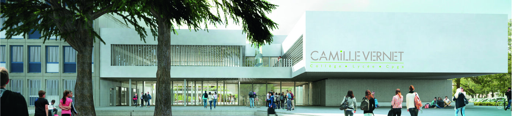
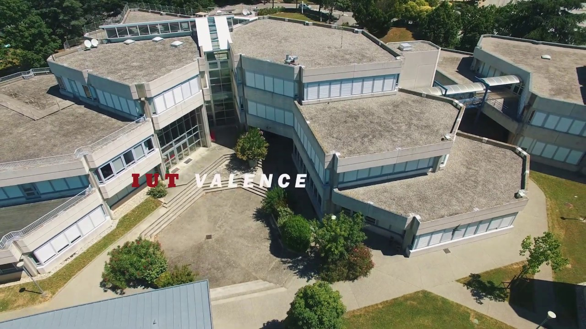

Mes études
Études secondaires
J'ai entrepris mes années de collège et lycée à la cité scolaire Camille Vernet. J'ai réalisé un baccalauréat général en suivant les spécialités Mathématiques et Physiques Chimies.


Acquisitions
En plus d'avoir appris des notions avancées en Mathématique et en Physique Chimie, j'ai également suivi un cursus général incluant des matières comme l'Anglais, l'Histoire, la Géographie, la Philosophie, les Sciences de la Vie et de la Terre, et le Français.
Études supérieurs
Après l'obtention de mon baccalauréat, j'ai poursuivis mes études en BUT Informatique à l'IUT de Valence, une formation de 3 années.

Acquisitions
J'ai appris à comprendre et à maîtriser les nombreux domaines de l'Informatique, que ce soit du backend, avec la gestion de bases de données, la création de scripts bash shell, la prise en main de l'environnement Linux, la programmation dans les langages de bas niveau comme l'Assembleur, le C, le Rust, et tout ce que cela inclus, au frontend, avec l'apprentissage du HTML, CSS, Java/Typescript, PHP, en passant par le développment mobile Android, Kotlin et Jetpack Compose.
Mes expériences professionnelles
DPIA COLAERT
Durant ma formation de BUT Informatique, j'ai réalisé un state et une alternance en seconde et dernière année chez l'entreprise DPIA COLAERT, une entreprise spécialisée dans la fabrication et la distribution de composants pour véhicules industriels (ressorts, suspensions, kits, brides).
Acquisitions
Durant mon stage et mon alternance, j'ai été chargé de développer une application web en interne pour faciliter l'extraction de données de l'ERP de l'entreprise. J'ai également aidé cette dernière à choisir, configurer et à mettre en place leur propre gestionnaire de versions de code en local, Gitea, sur un VPS. Enfin, j'ai accompagné DPIA COLAERT dans le développement d'une application embarquéee dédiée à la pesée de charges sur un véhicule équipe de capteurs.